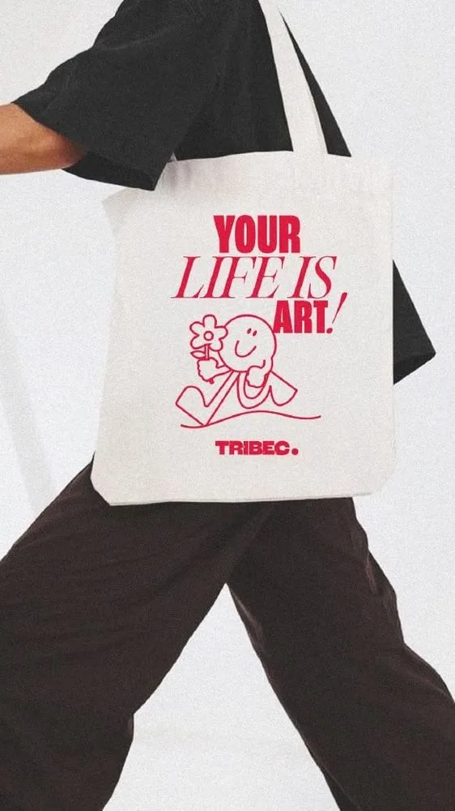

Ecobag é o brinde sustentável mais pedido na nossa fábrica. Mesmo assim, a pergunta aparece em quase toda negociação: trocar a sacola plástica por uma bolsa de pano reduz mesmo o impacto ambiental? A resposta curta é que depende de quantas vezes a ecobag será usada. Os dois estudos de ciclo de vida mais citados sobre o tema mostram números altos, e entender esses números muda a forma de encomendar o brinde.
O que é uma avaliação de ciclo de vida
A avaliação de ciclo de vida (ACV, ou LCA na sigla em inglês) mede os impactos de um produto desde a extração da matéria-prima até o descarte: cultivo ou produção da fibra, tecelagem, confecção, transporte, uso e fim de vida. O resultado não é uma nota única. Cada estudo escolhe indicadores, como aquecimento global, consumo de água, toxicidade ou eutrofização, e compara os produtos em cada um deles.
Nos estudos sobre sacolas, a pergunta central é sempre a mesma: quantas vezes uma sacola reutilizável precisa ser usada para que o impacto por uso fique igual ou menor que o de uma sacola plástica descartável?
O estudo da UK Environment Agency (2011)
A agência ambiental da Inglaterra publicou em 2011 o relatório Life cycle assessment of supermarket carrier bags (fonte 1). O estudo analisou as sacolas disponíveis nos supermercados britânicos em 2006 e usou como referência a sacola fina de polietileno de alta densidade (HDPE), a sacolinha comum de mercado.
Considerando apenas o potencial de aquecimento global, o relatório chegou a estes números de reutilização para empatar com a sacola HDPE usada uma vez:
- Sacola de papel: 3 usos;
- Sacola retornável de LDPE (a "bag for life"): 4 usos;
- Sacola de polipropileno não tecido (TNT): 11 usos;
- Sacola de algodão: 131 usos.
O relatório também simulou o cenário em que a sacolinha plástica volta a ser usada como saco de lixo. Nesse caso, a sacola de algodão precisaria de 173 usos para empatar. O próprio estudo aponta que o impacto de todas as sacolas está concentrado na extração de recursos e na produção, e não no transporte ou no descarte.
O estudo da Danish EPA (2018)
Em 2018, a agência de proteção ambiental da Dinamarca (Miljøstyrelsen) publicou o Life Cycle Assessment of grocery carrier bags (fonte 2), Environmental Project nº 1985. O escopo é mais amplo: sacolas vendidas em supermercados dinamarqueses em 2017, 16 indicadores ambientais e cenários de incineração, reciclagem e reuso como saco de lixo, seguindo as normas ISO 14040 e 14044.
Os números mais citados do relatório são os de algodão quando se consideram todos os indicadores juntos:
- Algodão convencional: cerca de 7.100 usos para igualar a sacola de LDPE;
- Algodão orgânico: cerca de 20.000 usos, porque o estudo assumiu produtividade agrícola menor e, portanto, mais recurso por quilo de fibra.
Esses números precisam de contexto. O valor mais alto vem de um único indicador (depleção da camada de ozônio), e, dependendo do indicador, o algodão precisa de 52 a 7.100 usos para empatar. A organização Beyond Plastics publicou uma análise crítica sobre a forma como esses números foram divulgados (fonte 3). O próprio relatório também traz conclusões úteis: reciclar compensa mais nas sacolas pesadas de PP, PET e poliéster, e reusar como saco de lixo compensa nas sacolas leves.
Por que o algodão sai tão mal nas contas
O peso explica boa parte. Uma sacolinha de mercado pesa poucos gramas. Uma ecobag de algodão pesa dezenas de gramas a mais, e cada grama de algodão carrega o impacto do cultivo, que consome água, terra, fertilizantes e energia. Os dois estudos trabalham com impacto por uso. Uma ecobag que fica na gaveta tem impacto por uso altíssimo.
Há também o que os estudos não medem bem. Nenhum dos dois quantifica com profundidade o lixo plástico que escapa para rios e oceanos, que é justamente o problema que motivou as leis contra sacolas descartáveis. A ACV responde a uma pergunta específica, e a decisão final costuma levar outros fatores em conta.
Conclusão prática para quem encomenda ecobag de brinde
A leitura honesta dos dois estudos é esta: a ecobag só é a opção mais sustentável se for usada muitas vezes. Para quem compra brinde, isso vira critério de projeto. Na nossa produção, os pontos que mais influenciam o uso real são:
- Tamanho útil: a ecobag precisa caber compras de mercado, notebook ou material de academia. Sacola pequena demais vira embalagem e é descartada;
- Tecido encorpado: lona e algodão cru de gramatura mais alta duram anos. Tecido fino rasga na alça e perde a forma. Veja como ler essa especificação no post sobre denier e gramatura;
- Alça reforçada: costura em X ou retângulo no ponto de fixação evita o defeito mais comum, que é a alça descosturando;
- Personalização discreta: as pessoas usam mais uma bolsa com arte bonita e logo pequeno do que uma sacola com logo gigante. Ecobag que vira peça do dia a dia gera exposição de marca por mais tempo;
- Quantidade certa: comprar acima do necessário gera estoque parado, que é o pior cenário ambiental. Com pedido mínimo de 20 peças por modelo e cor, dá para dimensionar o lote com mais precisão.
Algodão, lona, poliéster ou TNT?
Os estudos comparam materiais por uso, e não existe um vencedor universal. O TNT de polipropileno empata com poucos usos no estudo britânico, mas tende a durar menos e tem aparência promocional. O algodão e a lona exigem muitos usos, mas são os tecidos que as pessoas guardam e usam por anos quando a peça é bem feita. O poliéster, inclusive o reciclado, fica no meio do caminho, aceita sublimação e é leve.
Nossa recomendação é escolher o material pelo uso esperado. Evento de um dia pede outra solução. Brinde para cliente ou colaborador, que deve acompanhar a pessoa por meses, pede lona ou algodão encorpado e acabamento de bolsa, não de sacola. O guia de ecobag personalizada detalha tamanhos e acabamentos, e a página de ecobags personalizadas mostra modelos que já produzimos.
Como comunicar sem exagerar
Se a sua empresa vai usar a ecobag como argumento ambiental, vale ser preciso. Em vez de afirmar que a sacola "salva o planeta", oriente o uso: um cartão ou etiqueta que convide a levar a bolsa às compras já faz diferença no número de reutilizações. Afirmações ambientais sem base podem soar como propaganda vazia e prejudicar a credibilidade da marca. Para outras ideias de brinde com uso prolongado, veja como escolher brindes para clientes e a página de brindes corporativos.
Perguntas frequentes
Quantas vezes preciso usar uma ecobag de algodão para compensar a sacola plástica?
Segundo o estudo da UK Environment Agency de 2011, considerando só aquecimento global, a sacola de algodão precisa de 131 usos para empatar com a sacolinha HDPE usada uma vez. O estudo da Danish EPA de 2018, somando 16 indicadores, chegou a cerca de 7.100 usos para algodão convencional.
Ecobag de TNT é mais sustentável que a de algodão?
No estudo britânico, a sacola de polipropileno não tecido empata com 11 usos, contra 131 do algodão. Na prática, o TNT costuma durar menos. A melhor escolha é o material que será usado mais vezes pelo público do brinde.
Qual tecido escolher para uma ecobag de brinde durar mais?
Lona ou algodão cru encorpado, com alças reforçadas na costura e tamanho útil para compras ou notebook. Esses pontos aumentam o número de usos, que é o que reduz o impacto por uso.
Qual o pedido mínimo de ecobag personalizada na LS Confecções?
O pedido mínimo é de 20 peças por modelo e cor. A peça piloto fica pronta em até 15 dias e a produção leva até 25 dias úteis após a aprovação da piloto.
Fontes
- Life cycle assessment of supermarket carrier bags: a review of the bags available in 2006 (Report SC030148), Environment Agency (Reino Unido), 2011.
- Life Cycle Assessment of grocery carrier bags (Environmental Project No. 1985), Danish Environmental Protection Agency, 2018.
- Breaking down the Danish study on the environmental impacts of grocery carrier bags, Beyond Plastics.
- Reusing carrier bags is greenest, says agency LCA, ENDS Report, 2011.
Quer uma ecobag que seja usada de verdade?
Fabricamos ecobags em lona, algodão cru e poliéster com a sua marca, a partir de 20 peças por modelo e cor. Fale com o comercial e defina tecido, tamanho e personalização.
Solicitar orçamento